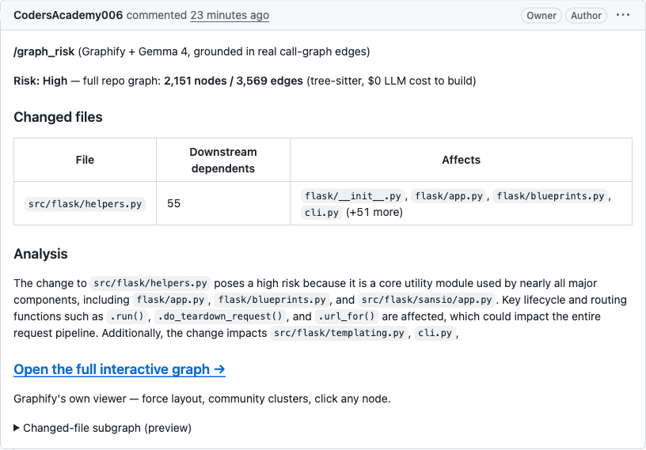
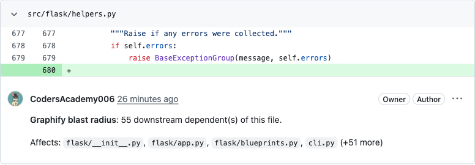

built for Hacktoberfest · sponsor track: Graphify
OneGraph
Graphify builds the real structural dependency graph: tree-sitter, $0 LLM cost. Gemma 4 narrates it, with citations that trace back to a real file:line, not a guess.
How it works
Two pipelines, one real graph
Build the graph
- repo
-
graphify extract, tree-sitter AST, $0 LLM -
graphify label, names every community - exported, deployed to Vercel
Review a pull request
- PR diff
-
graphify affected, real blast radius - Gemma 4 writes the plain-English review
- posted as a PR-Agent comment, with graph link
Graphify extracts
tree-sitter AST over the real repo: every call, import and containment edge, $0 LLM cost to build.
Gemma 4 narrates
reads the real graph traversal, writes the plain-English review, and cites only modules that actually exist.
Wired into PR-Agent
comment /graph_risk on any PR: it posts the risk review and a link to the full live graph.
Real scale, not a toy demo
Four real repos, mapped end to end
Every node and edge below is a real extracted symbol. Graphify ran on the actual public repo, nothing trimmed, nothing simulated.
Not just syntax-checked
Live in a real pull request
Verified end to end against a real demo PR, through the GitHub API, not just a clean exit code. Open the PR →

The structured review comment: risk level computed from a real blast-radius count, a per-file table, and the analysis paragraph Gemma 4 writes.

An inline comment anchored to the exact diff line, greptile/CodeRabbit-style, from the same blast-radius traversal.
Two tools, two real diffs
Pluggable, not rebuilt
Why this exists
A code review that says a change "looks risky" without showing why is a guess. A dependency diagram made of hand-drawn boxes and arrows is also a guess. OneGraph removes both guesses: Graphify extracts the graph once, cheaply and deterministically; Gemma 4 only ever talks about nodes and edges that are actually there.